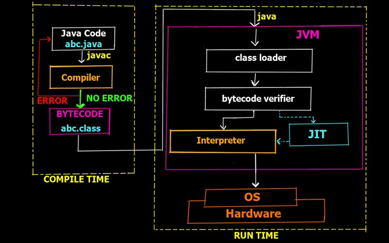

Java est un langage de programmation à usage général, évolué et orienté objet dont la syntaxe est proche du C. Ses caractéristiques ainsi que la richesse de son écosystème et de sa communauté lui ont permis d'être très largement utilisé pour le développement d'applications de types très disparates. Java est notamment largement utilisé pour le développement d'applications d'entreprises et mobiles. * Quelques chiffres et faits à propos de Java en 2011 :
Un programme Java est composé d'un ou plus généralement plusieurs fichiers source. N'importe quel éditeur de texte peut être utilisé pour éditer un fichier source Java.
Ces fichiers source possèdent l'extension .java. Ils peuvent contenir une ou plusieurs classes ou interfaces mais il ne peut y avoir qu'une seule classe ou interface déclarée publique par fichier. Le nom de ce fichier source doit obligatoirement correspondre à la casse près au nom de cette entité publique suivi de l'extension .java
Il est nécessaire de compiler le source pour le transformer en J-code ou bytecode Java qui sera lui exécuté par la machine virtuelle. Pour être compilé, le programme doit être enregistré au format de caractères Unicode : une conversion automatique est faite par le JDK si nécessaire.
Un compilateur Java, par exemple l'outil javac fourni avec le JDK est utilisé pour compiler chaque fichier source en fichier de classe possédant l'extension .class. Cette compilation génère pour chaque fichier source un ou plusieurs fichiers .class qui contiennent du bytecode.

| Exemple | |
|---|---|
|
public class MaClasse { public static void main(String[] args) { System.out.println( "Bonjour"); } } |
|
| Résultats | |
|---|---|
|
C:\TEMP>javac MaClasse.java C:\TEMP>dir MaClas* Volume in drive C has no label. Volume Serial Number is 1E06-2R43 Directory of C:\TEMP 31/07/2007 13:34 417 MaClasse.class 31/07/2007 13:34 117 MaClasse.java |
|